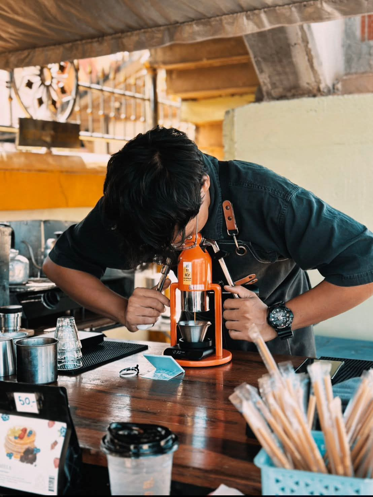
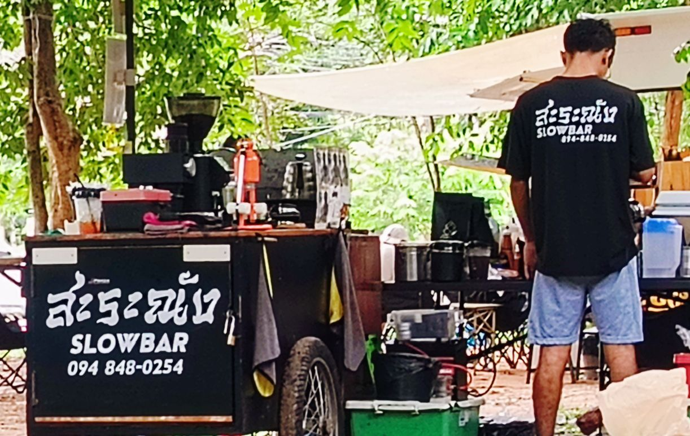
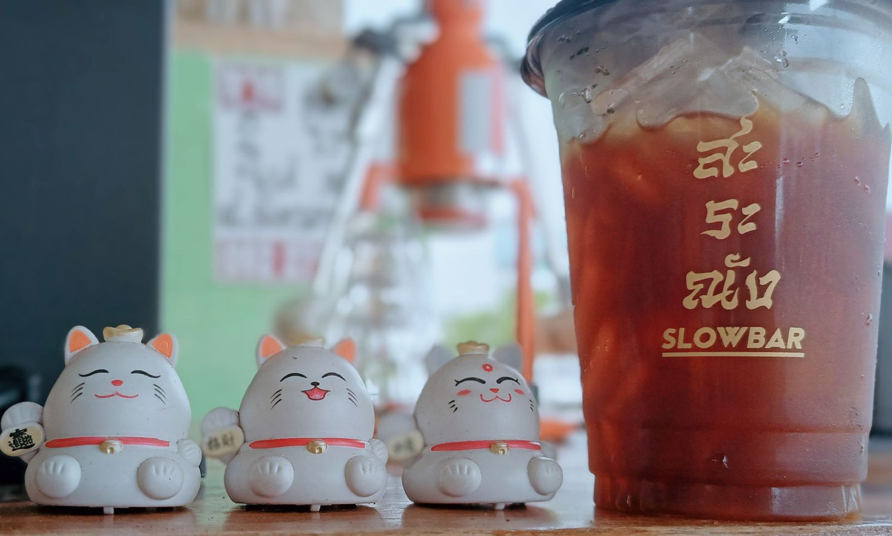
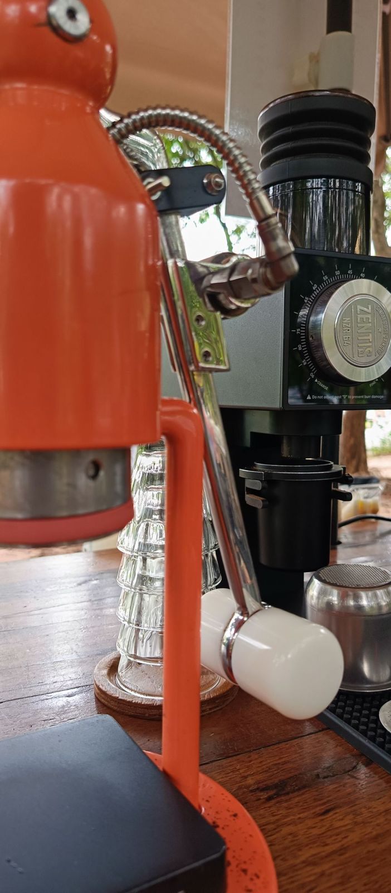
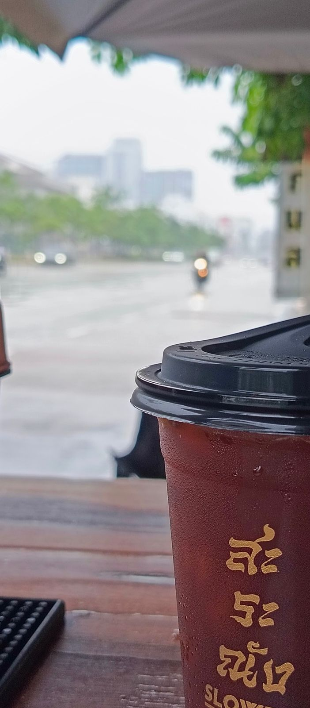
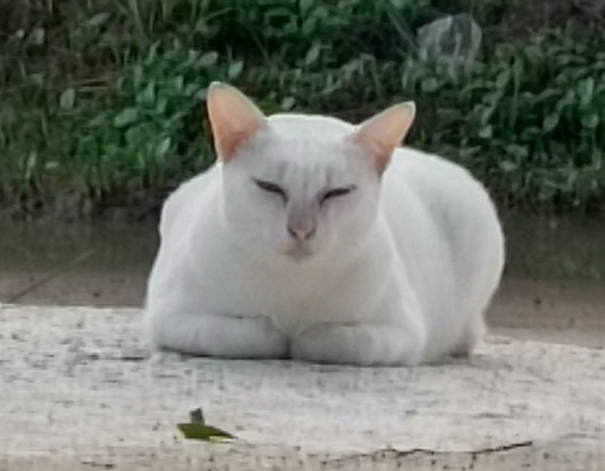

Coffee กาแฟ
Strong, hand-pulled espresso drinks, hot or iced. The reason most people find us.

Slow-bar coffee · Khon Kaen
Saranang Slowbar is a little coffee cart with a big pour. Every cup is hand-pulled on our lever machine. Come early, grab a seat under the trees and start the day properly.
Find the cart · จุดตั้งร้าน
Lan Pa Du, on the south side of the Khon Kaen University Agricultural Park. Days off and any change of spot are posted on our Facebook page.
About us · เกี่ยวกับเรา
สะระณัง (Saranang) is our small, mobile slow bar. No rush and no shortcuts: just good beans, a manual lever espresso maker and time taken over every glass.
Our regulars come for the strong coffee, stay for the tea, and say hello to the resident white cat.


At the bar · เมนูที่ร้าน
Ask at the cart for today's beans and menu.
Strong, hand-pulled espresso drinks, hot or iced. The reason most people find us.
Iced tea poured over plenty of ice in our maroon-and-gold cups.
Fragrant and sweet. A favourite with our Google reviewers.
What people say
“กาแฟดีมากกกกก ชาอร่อยมาก ราคาแค่ 40-45 อร่อยกว่าตามคาเฟ่อีก!!”Google review
“อร่อยมากชาเขียว รสชาติหอมหวาน”Google review
“Really good coffee, really tasty tea, only 40–45 baht, and better than a lot of cafés!”Google review (translated)
Gallery



Contact · ติดต่อ